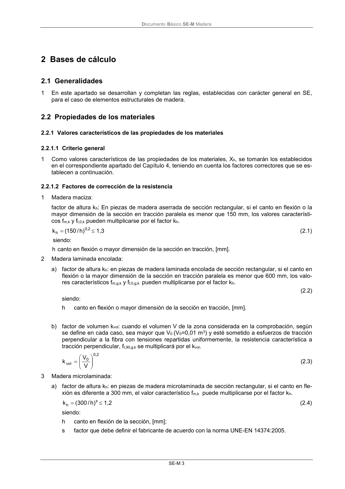

DB-SE-M · 2.2.1.1 Criterio general · versión 2019-12-20 · capa oficial
Formatos: JSON compacto · Markdown · PDF fuente
Ámbito del documento · texto del ámbito · documento y tablas
ID técnico a0029 · PDF pág. 9 · jerarquía no validada por persona · contrastado con el literal de la página 9 (candidato tipográfico); no validado por persona · padre: raíz
2.2.1.1 Criterio general 1 Como valores característicos de las propiedades de los materiales, Xk, se tomarán los establecidos en el correspondiente apartado del Capítulo 4, teniendo en cuenta los factores correctores que se es- tablecen a continuación.

PDF fuente redistribuible: copia fiel enlazada en esta página (SHA256 verificado).